Arbres⚓︎


1. Terminologie⚓︎
1.1 Vocabulaire⚓︎
Un arbre est une structure hiérarchique de données, composée de nœuds. Si on adopte le vocabulaire des graphes, un arbre est un graphe non orienté, connexe, sans cycle, et dans lequel un nœud joue le rôle de racine.
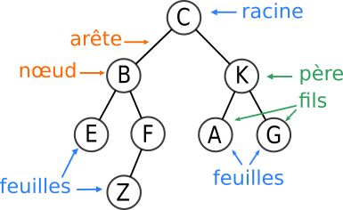
-
Chaque nœud a exactement un seul nœud père, à l'exception du nœud racine qui est le seul nœud à ne pas avoir de père. (oui, la racine d'une arbre est en haut) 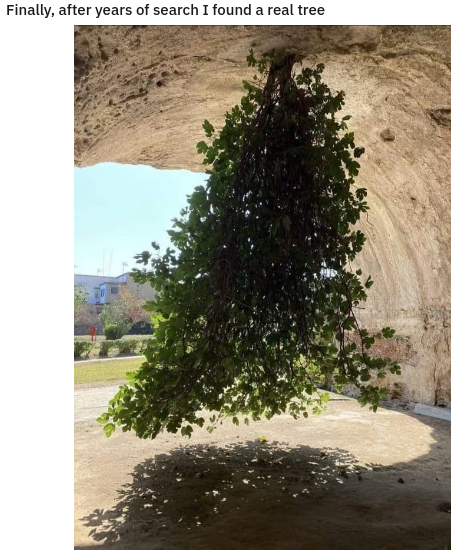
-
Chaque nœud peut avoir un nombre quelconque de fils, dont il est le père.
- Les nœuds qui n'ont pas de fils sont appelés les feuilles (ou nœuds externes).
- Les nœuds qui ne sont pas des feuilles sont des nœuds internes.
- Le nom de chaque nœud est appelé son étiquette.
Exemples : dans l'arbre ci-dessus,
- C est la racine, E, Z A et G sont les feuilles.
- K est le père de A et G.
- F est le père de Z.
- C est le père de B et K
- B est le père de E et F.
1.2 Exemples d'arbres⚓︎
1.2.1 La famille royale britannique (avant le 08 septembre 2022)⚓︎

Redessinez de manière plus schématique cet arbre. Pour quelle raison cet arbre a-t-il été modifié par rapport à sa version orginale (voir ici ), qui laissait apparaître les parents de chaque enfant ?
{kind=link}
1.2.2 Le DOM d'une page web⚓︎
DOM : Document Object Model

1.2.3 L'arborescence d'un disque dur⚓︎
Les systèmes Unix (MacOS ou GNU/Linux) organisent leur disque dur suivant l'arborescence ci-dessous :

Exercice 1
Quelque part à l'intérieur des dossiers contenus dans l'archive dossiers.zip se trouve un fichier tresor.txt. Quel secret renferme-t-il ?
Attention, cette recherche est à faire uniquement en ligne de commande :
ls: pour lister les dossiers et fichiers d'un répertoirecd Dossier: pour se rendre dans le repértoireDossiercd ..: pour remonter d'un niveau dans l'arborescenceunzip monarchive.zip: pour décompresser une archivetree: pour afficher l'arborescence du répertoire courantsudo apt install monprog: pour installer le programmemonprogsi celui-ci est manquant.
1.3 Caractéristiques d'un arbre⚓︎
1.3.1 Outils numériques de description⚓︎
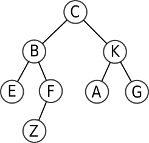
Définitions 
-
la taille d'un arbre est son nombre total de nœuds. Ici, elle vaut 8.
-
l'arité d'un nœud est son nombre de fils. Ici, l'arité de B vaut 2, celle de F vaut 1, celle de Z vaut 0.
-
la profondeur d'un nœud est le nombre de nœuds de son chemin le plus court vers la racine. Ici, la profondeur de G est 3 (G-K-C), la profondeur de B est 2 (B-C), la profondeur de Z est 4 (Z-F-B-C), la profondeur de C est 1.
-
la hauteur d'un arbre est la profondeur de son nœud le plus profond. Ici, la hauteur de l'arbre est 4.
Nous prendrons comme convention que :- si un arbre est réduit à un seul nœud-racine, sa hauteur sera 1.
- si un arbre est vide, sa hauteur est 0.
Cette convention est celle adoptée dans le sujet 0 publié le 15/12/2020. Attention, dans certains ouvrages, l'arbre vide a pour hauteur -1, et donc l'arbre réduit à un seul nœud a pour hauteur 0, donc notre arbre aurait avec cette convention une hauteur 3.
1.4 Arbres binaires⚓︎
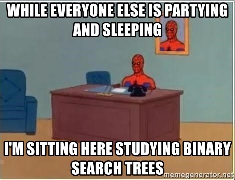
Définition
Un arbre binaire est un arbre dont chaque nœud possède au plus deux fils.
L'arbre généalogique de la famille royale britannique n'est pas un arbre binaire.
L'arbre ci-dessous est lui un arbre binaire.

1.4.1 Sous-arbres d'un arbre binaire⚓︎
Chaque nœud d'un arbre binaire ne pouvant pas avoir plus de 2 fils, il est possible de séparer le «dessous» de chaque nœud en deux sous-arbres (éventuellement vides) : le sous-arbre gauche et le sous-arbre droit.
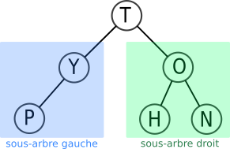
- Les deux sous-arbres représentés ici sont les sous-arbres du nœud-racine T.
- Le nœud O admet comme sous-arbre gauche le nœud H et comme sous-arbre droit le nœud N.
- Les feuilles P, H et N ont pour sous-arbre gauche et pour sous-arbre droit l'arbre vide.
1.4.3 Cas des arbres binaires complets⚓︎
On rencontre très souvent des arbres binaires dits complets parce qu'aucun des fils gauche ou droit n'est manquant.
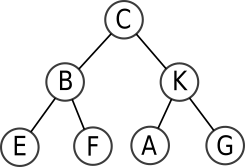
Taille d'un arbre complet de hauteur \(h\) : \(1 + 2 + 2^2 + 2^3 + \dots + 2^{h-1} = 2^{h} - 1\)
preuve : ceci est la somme \(S\) des \(h\) premiers termes d'une suite géométrique de raison 2 et de premier terme 1, d'où \(S= \frac{1-2^{h}}{1-2} = 2^{h} -1\).
Un arbre complet de hauteur \(h\) (en prenant la convention que l'arbre vide a pour hauteur 0) a donc une taille égale à \(2^{h}-1\).
Remarque : On en déduit une inégalité classique sur l'encadrement de la taille \(t\) d'un arbre binaire (non nécessairement complet) de hauteur \(h\) :
2. Parcours d'arbres⚓︎
Les arbres étant une structure hiérarchique, leur utilisation implique la nécessité d'un parcours des valeurs stockées. Par exemple pour toutes les récupérer dans un certain ordre, ou bien pour en chercher une en particulier.
Il existe plusieurs manières de parcourir un arbre.
2.1 Parcours en largeur d'abord (BFS)⚓︎
BFS : Breadth First Search
Méthode du parcours en largeur (BFS)
Le parcours en largeur d'abord est un parcours étage par étage (de haut en bas) et de gauche à droite.

L'ordre des lettres parcourues est donc T-Y-O-P-H-N.
Les trois parcours que nous allons voir maintenant sont des parcours en profondeur d'abord, ou DFS (Depth First Search). Ce qui signifie qu'un des deux sous-arbres sera totalement parcouru avant que l'exploration du deuxième ne commence.
2.2 Parcours préfixe⚓︎
Le parcours préfixe est un parcours en profondeur d'abord.
Méthode du parcours préfixe
(parfois aussi appelé préordre)
- Chaque nœud est visité avant que ses fils le soient.
- On part de la racine, puis on visite son fils gauche (et éventuellement le fils gauche de celui-ci, etc.) avant de remonter et de redescendre vers le fils droit.

L'ordre des lettres parcourues est donc T-Y-P-O-H-N.
2.3 Parcours infixe⚓︎
Le parcours infixe est aussi un parcours en profondeur d'abord.
Méthode du parcours infixe
(parfois aussi appelé en ordre)
- Chaque nœud est visité après son fils gauche mais avant son fils droit.
- On part donc de la feuille la plus à gauche et on remonte par vagues sucessives. Un nœud ne peut pas être visité si son fils gauche ne l'a pas été.

L'ordre des lettres parcourues est donc P-Y-T-H-O-N.
2.4 Parcours postfixe⚓︎
Le parcours postfixe est aussi un parcours en profondeur d'abord.
Méthode du parcours postfixe
(parfois aussi appelé post-ordre ou encore suffixe)
- Chaque nœud est visité après ses fils le soient.
- On part donc de la feuille la plus à gauche, et on ne remonte à un nœud père que si ses fils ont tous été visités.

L'ordre des lettres parcourues est donc P-Y-H-N-O-T.
2.5 Comment ne pas se mélanger entre le pré / in / post fixe ?⚓︎
- pré veut dire avant
- in veut dire au milieu
- post veut dire après
Ces trois mots-clés parlent de la place du père par rapport à ses fils. Ensuite, il faut toujours se souvenir qu'on traite le fils gauche avant le fils droit.
- préfixe : le père doit être le premier par rapport à ses fils.
- infixe : le père doit être entre son fils gauche (traité en premier) et son fils droit.
- postfixe : le père ne doit être traité que quand ses deux fils (gauche d'abord, droite ensuite) l'ont été.
Un parcours préfixe commencera toujours par la racine, alors qu'un parcours postfixe finira toujours par la racine. Dans un parcours infixe, la racine sera «au milieu» (pas nécessairement parfaitement).
Exercice 2
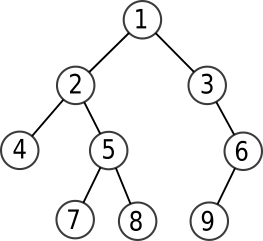
Donner le rendu de chaque parcours :
- Parcours en largeur
- Parcours préfixe
- Parcours infixe
- Parcours postfixe
largeur : 1 2 3 4 5 6 7 8 9
préfixe : 1 2 4 5 7 8 3 6 9
infixe : 4 2 7 5 8 1 3 9 6
postfixe : 4 7 8 5 2 9 6 3 1
Exercice 3

Donner le rendu de chaque parcours :
- Parcours en largeur
- Parcours préfixe
- Parcours infixe
- Parcours postfixe
largeur : 9 8 7 6 2 5 1 4 3
préfixe : 9 8 6 2 1 7 5 4 3
infixe : 6 8 1 2 9 7 4 5 3
postfixe : 6 1 2 8 4 3 5 7 9
3. Implémentations d'un arbre binaire⚓︎
3.1 En utilisant la Programmation Orientée Objet⚓︎
Le but est d'obtenir l'interface ci-dessous.
Il est à remarquer que ce que nous allons appeler «Arbre» est en fait un nœud et ses deux fils gauche et droit.
interface souhaitée
>>> a = Arbre(4) # pour créer l'arbre dont le nœud a pour valeur 4,
# et dont les sous-arbres gauche et droit sont None
>>> a.left = Arbre(3) # pour donner la valeur 3 au nœud du sous-arbre gauche de a
>>> a.right = Arbre(1) # pour donner la valeur 1 au nœud du sous-arbre droit de a
>>> a.right.data # pour accéder à la valeur du fils droit de a
Exercice 4
Dessinez l'arbre créé par les instructions suivantes :
>>> a = Arbre(4)
>>> a.left = Arbre(3)
>>> a.right = Arbre(1)
>>> a.right.left = Arbre(2)
>>> a.right.right = Arbre(7)
>>> a.left.left = Arbre(6)
>>> a.right.right.left = Arbre(9)
Correction
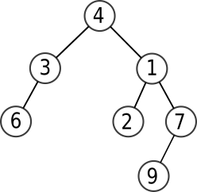
 Implémentation
Implémentation
⯈ Principe : nous allons créer une classe Arbre, qui contiendra 3 attributs :
data: la valeur du nœud (de typeInt)left: le sous-arbre gauche (de typeArbre)right: le sous-arbre droit (de typeArbre).
Par défaut, les attributs left et right seront à None, qui représentera l'arbre vide (ce qui n'est pas très rigoureux, car None n'est pas de type Arbre...).
⯈ Encapsulation ou pas ??? :
Afin de respecter le paradigme de la Programmation Orientée Objet, nous devrions jouer totalement le jeu de l'encapsulation en nous refusant d'accéder directement aux attributs.
Pour cela il faut construire des méthodes permettant d'accéder à ces attributs (avec des getters, ou accesseurs en français) ou de les modifier (avec des setters, ou mutateurs en français) .
3.1.1 Implémentation avec encapsulation⚓︎
Classe Arbre avec encapsulation
1 2 3 4 5 6 7 8 9 10 11 12 13 14 15 16 17 18 19 20 | |
L'implémentation précédente permet d'utiliser les instructions de l'exercice précédent et de vérifier que l'arbre a bien été créé.
>>> a = Arbre(4)
>>> a.set_left(Arbre(3))
>>> a.set_right(Arbre(1))
>>> a.get_right().set_left(Arbre(2))
>>> a.get_right().set_right(Arbre(7))
>>> a.get_left().set_left(Arbre(6))
>>> a.get_right().get_right().set_left(Arbre(9))
>>> a
<__main__.Arbre at 0x7f0100361f40>
>>> a.get_right().get_left().get_data()
2
3.1.1 Implémentation sans encapsulation⚓︎
Classe Arbre sans encapsulation
1 2 3 4 5 | |
C'est déjà fini !
a = Arbre(4)
a.left = Arbre(3)
a.right = Arbre(1)
a.right.left = Arbre(2)
a.right.right = Arbre(7)
a.left.left = Arbre(6)
a.right.right.left = Arbre(9)
>>> a
<__main__.Arbre at 0x7f0100361f40>
>>> a.right.left.data
2
On voit que l'implémentation avec accès direct aux attributs est beaucoup plus simple et rapide. Néanmoins, elle peut être considérée comme incorrecte dans certains langages qui obligent à passer par des accesseurs ou mutateurs pour lire ou modifier les attributs.
3.1.2 Représentation graphique en console⚓︎
La méthode affiche suivante (qui n'est pas à connaître) permet d'avoir un semblant de représentation graphique de l'arbre en console :
1 2 3 4 5 6 7 8 9 10 11 12 13 | |
La représentation de cet arbre : donnera alors :
>>> print(a.affiche())
|_4
|_3
|_6
|_None
|_1
|_2
|_7
|_9
|_None
3.2 Implémentation à partir de tuples imbriqués⚓︎
Arbre sous forme de tuples imbriqués
Un arbre peut se représenter par le tuple (valeur, sous-arbre gauche, sous-arbre droit).
L'arbre ci-dessous :
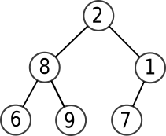
est représenté par le tuple :
>>> a = (2, (8, (6,(),()), (9,(),())), (1, (7, (),()), ()))
Le sous-arbre gauche est alors a[1] et le sous-arbre droit est a[2].
>>> a[1]
(8, (6, (), ()), (9, (), ()))
>>> a[2]
(1, (7, (), ()), ())
Exercice 5
Écrire le tuple représentant l'arbre ci-dessous.
Correction
a = (T,(Y,(P,(),()),()),(O,(H,(),()),(N,(),())))
3.3 Implémentation à partir d'une «simple» liste⚓︎
De manière plus surprenante, il existe une méthode pour implémenter un arbre binaire (qui est une structure hiérarchique) avec une liste (qui est une structure linéaire). Ceci peut se faire par le biais d'une astuce sur les indices :
Les fils du nœud d'indice i sont placés aux indice 2i+1 et 2i+2.
Cette méthode est connue sous le nom de «méthode d'Eytzinger», et utilisée notamment en généalogie pour numéroter facilement les individus d'un arbre généalogique.
Exemple :

Pour comprendre facilement la numérotation, il suffit de s'imaginer l'arbre complet (en rajoutant les fils vides) et de faire une numérotation en largeur, niveau par niveau :

Exercice 6
Si on note Δ le sous-arbre vide, dessiner l'arbre représenté par la liste :
a = [3, 4, Δ, 7, 5]
Correction

Remarque : parfois (comme dans le sujet 0...) la racine de l'arbre est placée à l'indice 1. Dans ce cas, les fils du nœud d'indice i sont placés aux indice 2i et 2i+1.
4. Utilisation de l'implémentation : parcours, taille...⚓︎
Dans toute la suite, sauf mention contraire, on utilisera l'implémentation en Programmation Orientée Objet, en version sans encapsulation (la plus simple). Nous allons créer des fonctions renvoyant les différents parcours d'un arbre, ou encore sa taille, sa hauteur, son nombre de feuilles... Toutes ses fonctions exploiteront la structure récursive d'un arbre.
Rappel de l'implémentation :
1 2 3 4 5 | |
4.1 Parcours préfixe, infixe, postfixe⚓︎
Dans un premier temps nous allons écrire ces parcours de manière récursive. Nous souhaitons afficher les sommets, donc nous utiliserons print. Et deux appels récursifs...
4.1.1 Parcours préfixe⚓︎
Exemple avec l'arbre
1 2 3 4 5 6 7 8 9 | |
>>> prefixe(a)
9-8-6-2-1-7-5-4-3-
4.1.2 Parcours infixe⚓︎
Parcours infixe
def infixe(arbre):
if arbre is None :
return None
infixe(arbre.left)
print(arbre.data, end = '-')
infixe(arbre.right)
>>> infixe(a)
6-8-1-2-9-7-4-5-3-
4.1.3 Parcours postfixe⚓︎
Parcours postfixe
def postfixe(arbre):
if arbre is None :
return None
postfixe(arbre.left)
postfixe(arbre.right)
print(arbre.data, end = '-')
>>> postfixe(a)
6-1-2-8-4-3-5-7-9-
Pause vidéo
- Regardez et appréciez cette vidéo
- À l'aide de la vidéo, codez le parcours infixe en itératif.
Correction
1 2 3 4 5 6 7 8 9 10 | |
1 2 3 4 5 6 7 8 9 10 11 12 13 14 15 16 | |
4.2 Calcul de la taille d'un arbre⚓︎
Rappel : la taille d'un arbre est le nombre de ses nœuds.
Taille d'un arbre
def taille(arbre):
if arbre is None:
return 0
return 1 + taille(arbre.left) + taille(arbre.right)
Exemple avec l'arbre
1 2 3 4 5 6 7 8 9 | |
>>> taille(a)
9
4.3 Calcul de la hauteur d'un arbre⚓︎
Rappel : on prendra comme convention que l'arbre vide a pour hauteur 0.
Hauteur d'un arbre
def hauteur(arbre):
if arbre is None:
return 0
else:
return 1 + max(hauteur(arbre.left), hauteur(arbre.right))
>>> hauteur(a)
4
4.4 Calcul du nombre de feuilles d'un arbre⚓︎
Rappel : une feuille est un nœud d'arité 0, autrement dit sans fils gauche ni fils droit.
Nombre de feuilles d'un arbre
def nb_feuilles(arbre):
if arbre is None:
return 0
if (arbre.left is None) and (arbre.right is None):
return 1
return nb_feuilles(arbre.left) + nb_feuilles(arbre.right)
>>> nb_feuilles(a)
4
4.5 Recherche d'une valeur dans un arbre⚓︎
On renverra True ou False en fonction de la présence ou non de la valeur dans l'arbre.
Recherche d'une valeur dans un arbre
def recherche(arbre, valeur):
if arbre is None:
return False
if arbre.data == valeur:
return True
return recherche(arbre.left, valeur) or recherche(arbre.right, valeur)
>>> recherche(a, 2)
True
>>> recherche(a, 45)
False
4.6 Parcours en largeur⚓︎
Le parcours en largeur (BFS) est le plus simple à faire visuellement : mais il est plus difficile à coder que les parcours préfixe, infixe, postfixe.
Il est nécessaire d'utiliser une file :
- On place l'arbre dans la file.
- Tant que la file n'est pas vide, on procède comme suit :
- On défile, donc on récupère l'arbre situé en haut de la file.
- Si cet arbre n'est pas vide :
- On garde son étiquette.
- On enfile son sous-arbre gauche, puis son sous-arbre droit.
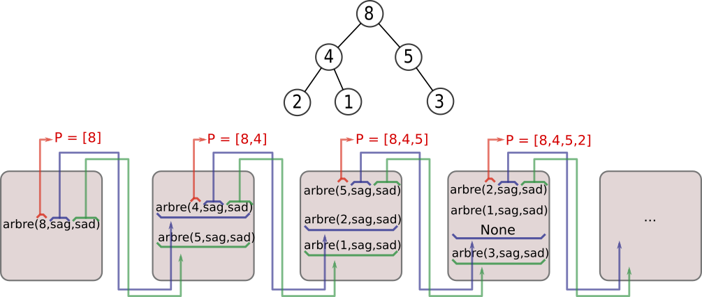
On importera l'objet Queue() du module queue de Python, qui permet de :
- créer une file vide avec
file = Queue() - défiler un élément par
file.get() - enfiler l'élément
aparfile.put(a) - savoir si la file est vide par le booléen
file.empty()
# arbre-test
# ne pas oublier de remonter plus haut dans le document pour relancer la classe Arbre
a = Arbre(8)
a.left = Arbre(4)
a.right = Arbre(5)
a.left.left = Arbre(2)
a.left.right = Arbre(1)
a.right.right = Arbre(3)
Parcours en largeur (BFS)
from queue import Queue
def BFS(arbre):
file = Queue()
file.put(arbre)
sol = []
while not file.empty():
a = file.get()
if a is not None :
sol.append(a.data)
file.put(a.left)
file.put(a.right)
return sol
>>> BFS(a)
[8, 4, 5, 2, 1, 3]
5. Arbres binaires de recherche (ABR)⚓︎
Définition d'un ABR
Un arbre binaire de recherche est un arbre binaire dont les valeurs des nœuds (valeurs qu'on appelle étiquettes, ou clés) vérifient la propriété suivante :
- l'étiquette d'un nœud est supérieure ou égale à celle de chaque nœud de son sous-arbre gauche.
- l'étiquette d'un nœud est strictement inférieure à celle du chaque nœud de son sous-arbre droit.

À noter que l'arbre 3 (qui est bien un ABR) est appelé arbre filiforme.
L'arbre 5 n'est pas un ABR à cause de la feuille 9, qui fait partie du sous-arbre gauche de 3 sans lui être inférieure.
Remarque : on pourrait aussi définir un ABR comme un arbre dont le parcours infixe est une suite croissante.
5.1 Déterminer si un arbre est un ABR⚓︎
Employer une méthode récursive imposerait de garder en mémoire dans l'exploration des sous-arbres la valeur maximale ou minimale. Nous allons plutôt utiliser la remarque précédente, et nous servir du parcours infixe.
Méthode : récupérer le parcours infixe dans une liste, et faire un test sur cette liste.
Être ou ne pas être un ABR
1 2 3 4 5 6 7 8 9 10 11 12 13 14 15 | |
# arbres-tests
#arbre n°4
a = Arbre(5)
a.left = Arbre(2)
a.right = Arbre(7)
a.left.left = Arbre(0)
a.left.right = Arbre(3)
a.right.left = Arbre(6)
a.right.right = Arbre(8)
#arbre n°5
b = Arbre(3)
b.left = Arbre(2)
b.right = Arbre(5)
b.left.left = Arbre(1)
b.left.right = Arbre(9)
b.right.left = Arbre(4)
b.right.right = Arbre(6)
>>> est_ABR(a)
True
>>> est_ABR(b)
False
5.2 Rechercher une clé dans un ABR⚓︎
Un arbre binaire de taille \(n\) contient \(n\) clés (pas forcément différentes). Pour savoir si une valeur particulière fait partie des clés, on peut parcourir tous les nœuds de l'arbre, jusqu'à trouver (ou pas) cette valeur dans l'arbre. Dans le pire des cas, il faut donc faire \(n\) comparaisons.
Mais si l'arbre est un ABR, le fait que les valeurs soient «rangées» va considérablement améliorer la vitesse de recherche de cette clé, puisque la moitié de l'arbre restant sera écartée après chaque comparaison.
Recherche d'une clé dans un ABR
def recherche_ABR(arbre, valeur):
if arbre is None :
return False
if arbre.data == valeur :
return True
if valeur < arbre.data :
return recherche_ABR(arbre.left, valeur)
else:
return recherche_ABR(arbre.right, valeur)
Exemple
L'arbre a contient la valeur 8, mais pas la valeur 12.
>>> recherche_ABR(a, 8)
True
>>> recherche_ABR(a, 12)
False
5.3 Coût de la recherche dans un ABR équilibré⚓︎

Imaginons un arbre équilibré de taille \(n\). Combien d'étapes faudra-t-il, dans le pire des cas, pour trouver (ou pas) une clé particulière dans cet arbre ?
Après chaque nœud, le nombre de nœuds restant à explorer est divisé par 2. On retrouve là le principe de recherche dichotomique, vu en classe de Première (voir ici).
S'il faut parcourir tous les étages de l'arbre avant de trouver (ou pas) la clé recherchée, le nombre de nœuds parcourus est donc égal à la hauteur \(h\) de l'arbre.
Pour un arbre complet, cette hauteur vérifie la relation \(2^h -1= n\). et donc \(2^h = n+1\).
\(h\) est donc le «nombre de puissance de 2» que l'on peut mettre dans \(n+1\). Cette notion s'appelle le logarithme de base 2 et se note \(\log_2\).
Par exemple, \(\log_2(64)=6\) car \(2^6=64\).
Le nombre maximal de nœuds à parcourir pour rechercher une clé dans un ABR équilibré de taille \(n\) est donc de l'ordre de \(\log_2(n)\), ce qui est très performant !
Pour arbre contenant 1000 valeurs, 10 étapes suffisent.
Cette complexité logarithmique est un atout essentiel de la structure d'arbre binaire de recherche.
5.4 Insertion dans un ABR⚓︎
L'insertion d'une clé va se faire au niveau d'une feuille, donc au bas de l'arbre. Dans la version récursive de l'algorithme d'insertion, que nous allons implémenter, il n'est pourtant pas nécessaire de descendre manuellement dans l'arbre jusqu'au bon endroit : il suffit de distinguer dans lequel des deux sous-arbres gauche et droit doit se trouver la future clé, et d'appeler récursivement la fonction d'insertion dans le sous-arbre en question.
Algorithme :
- Si l'arbre est vide, on renvoie un nouvel objet Arbre contenant la clé.
- Sinon, on compare la clé à la valeur du nœud sur lequel on est positionné :
- Si la clé est inférieure à cette valeur, on va modifier le sous-arbre gauche en le faisant pointer vers ce même sous-arbre une fois que la clé y aura été injectée, par un appel récursif.
- Si la clé est supérieure, on fait la même chose avec l'arbre de droite.
- on renvoie le nouvel arbre ainsi créé.
Insertion dans un ABR
def insertion(arbre, cle):
if arbre is None :
return Arbre(cle)
else :
val = arbre.data
if cle <= val :
arbre.left = insertion(arbre.left, cle)
else:
arbre.right = insertion(arbre.right, cle)
return arbre
Exemple : Nous allons insérer la valeur 4 dans l'arbre a et vérifier par un parcours infixe (avant et après l'insertion) que la valeur 4 a bien été insérée au bon endroit.
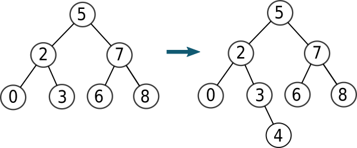
a = Arbre(5)
a.left = Arbre(2)
a.right = Arbre(7)
a.left.left = Arbre(0)
a.left.right = Arbre(3)
a.right.left = Arbre(6)
a.right.right = Arbre(8)
>>> infixe(a)
0-2-3-5-6-7-8-
>>> a = insertion(a,4)
<__main__.Arbre at 0x7f46f0507e80>
>>> infixe(a)
0-2-3-4-5-6-7-8-
La valeur 4 a donc bien été insérée au bon endroit.
Bibliographie
- Numérique et Sciences Informatiques, Terminale, T. BALABONSKI, S. CONCHON, J.-C. FILLIATRE, K. NGUYEN, éditions ELLIPSES.